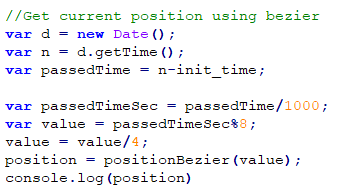
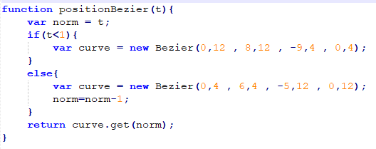

Utilizando la nave espacial, un modelo de 3 dimensiones no simetrico, se implementó una animación en figura de 8 irregular utilizando la librería bezier.js para la defición de una curva continua.
Existen 2 curvas. Cada una comienza en el final de la otra. Se colocaron los puntos externos a la curva paralelos para que la dirrección al cambiar de curva sea la correcta.
Se utiliza el tiempo actual normalizado para encontrar la posición en la curva en la que debe ir la nave espacial.
Luego se utiliza la derivada de la curva para encontrar el nuevo angulo de la nave.
Utilizando estos datos se generan los valores en (x,y,z) necesarios para la transformacion del modelo de la posición actual a la nueva posición. Se rota la figura utilizando el eje centrado en el modelo.
Por ultimo, se dibuja la figura en el canvas.
Hubieron problemas de compatibilidad entre las librerias necesarias para el funcionamiento de la animación y codepen y jsfiddle por lo cual se implemento el ejercicio en un archivo html estatico.